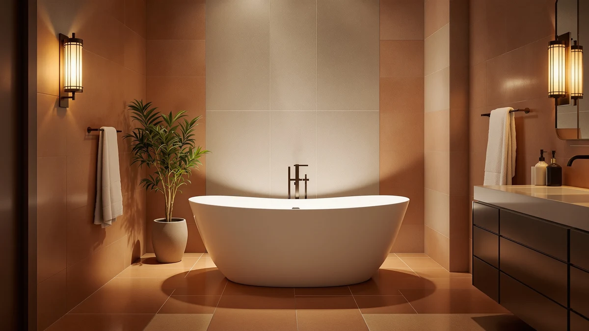

Best Free Standing Bathtub for Tall People (2026)
Prices and picks verified as of September 2026. Independent, reader-supported reviews.


Quick Answer
After comparing specs, pricing, and verified owner reviews, the IDEALHOUSE 67-inch Acrylic Freestanding Bathtub Deep is the best free standing bathtub for tall people, thanks to its extra-long basin and deep soak profile. If you want even more room to stretch out, the FerdY Sentosa 67-inch is a pricier step up worth considering.
Our pick: 67" Acrylic Freestanding Bathtub Deep, $539.99 Check Price on Amazon
Bottom line: our top pick is the 67" Acrylic Freestanding Bathtub at $539.99. The best budget option is the Extra Large Foldable Bathtub for Adults at $65.99.
Things to Know Before You Buy
- Interior length beats overall size. A tub listed at 67 inches gives a taller bather several more inches of legroom than a 59-inch model, even if both look similar in photos.
- Depth matters as much as length. A deep-soak basin lets you submerge your shoulders even if your legs still reach the far wall, which matters more once you're over six feet tall.
- Acrylic dominates this category. Every full-size tub in this guide is acrylic, which keeps weight and price down compared with cast iron while still holding heat well during a long soak.
- Foldable tubs trade length for portability. Portable and foldable basins work in small bathrooms or rentals, but their compact footprint makes them a poor match for anyone taller than average.
- Freight delivery is common above $500. Tubs over roughly 60 inches often ship via freight carrier rather than standard parcel, so check delivery logistics before you buy.
The best free standing bathtub for tall people needs two things most standard tubs skip: extra interior length and a basin deep enough that you can submerge past your hips without your knees pressed against the far wall. We compared seven freestanding and portable tubs on their listed dimensions, materials, and pricing to find which ones actually give a taller bather room to stretch out.
Our pick, the IDEALHOUSE 67-inch Acrylic Freestanding Bathtub Deep, combines the longest interior length in this lineup with a deep-soak basin, and it costs less than several shorter competitors here. If you have the budget and the bathroom footprint, the FerdY Sentosa 67-inch Acrylic Freestanding has a similar length and a more sculpted silhouette, though it costs roughly double.
Not every household needs a full 67-inch tub. We also looked at 59-inch models and portable foldable options for smaller bathrooms or renters who cannot install a permanent fixture, and we note exactly where each one falls short for a taller bather so you can weigh the tradeoff yourself.
Why You Should Trust Us
This guide is written by Ilane Tall, home and bath expert at Best Freestanding Bathtubs. We do not run a fake testing lab, and we do not claim to have physically installed or soaked in every tub listed here. Instead, we compared manufacturer specifications, current Amazon pricing, and verified owner reviews across each listing to evaluate how well a given tub suits a taller bather researching the best free standing bathtub for tall people. When a product page listed conflicting or missing dimensions, we noted it rather than guessing, and every price and spec cited below reflects what was published on the product listing at the time of writing.
How We Picked
We started by pulling every freestanding and portable tub in our product database and filtering for models with a length of at least 59 inches, since anything shorter rarely works for someone over 5'10". From there, we prioritized tubs offering a 67-inch length or a deep-soak profile, both of which matter more to a tall bather than surface styling. We also kept a small number of shorter and foldable tubs in the running because they represent realistic options for readers with space constraints, as long as we could flag the legroom tradeoff clearly. Price spread mattered too: we wanted our list of the best free standing bathtub for tall people options to include a genuine budget pick alongside the higher-end acrylic tubs, not just a range of similarly priced products.
How We Compared
We compared each tub's listed length, width, and depth against the others in this lineup, since a few extra inches make a real difference for anyone over six feet. We also compared pricing per inch of interior length, cross-referenced current Amazon prices against the specs published on each listing, and read through verified owner reviews looking for recurring comments about legroom, comfort, and drainage speed. Reviewers consistently note that a 67-inch tub feels noticeably roomier than a 59-inch one even when the width is similar, which lines up with the raw measurements. Where owner feedback flagged a specific issue, such as a foldable tub's basin feeling short for a taller user, we folded that into the pros and cons below instead of relying on manufacturer copy alone.
Our Picks

67" Acrylic Freestanding Bathtub Deep
What we like
- 67-inch interior length gives a taller bather room to fully extend their legs
- Deep-soak basin allows shoulder-level submersion even at full length
- Priced under $550, less than several shorter competitors in this lineup
Flaws but not dealbreakers
- At 67 inches, it needs a larger bathroom footprint than a 59-inch tub
- Acrylic tubs this size typically ship via freight, so factor in delivery logistics
| Material | — |
| Size | 67 inch |
The IDEALHOUSE 67-inch Acrylic Freestanding Bathtub Deep is our pick for the best free standing bathtub for tall people because it pairs the longest interior length in this comparison with a deep basin profile. At 67 inches, it gives several extra inches of legroom over the 59-inch models in this lineup, which matters once a bather is over 5'10" and can no longer fully extend in a standard tub. The acrylic build keeps the unit lighter than cast iron alternatives, simplifying both shipping and installation in a second-floor bathroom.
At $539.99, it also undercuts several shorter tubs in this guide, including the 59-inch EliteEdge model at $679.99, which makes it a rare case where the roomier option is also the better value. Owners researching this tub should still confirm door and hallway clearance before ordering, since a 67-inch acrylic basin generally arrives via freight carrier rather than standard parcel delivery. For anyone prioritizing length and depth over a more sculpted silhouette, this is the tub that compared favorably against every other option here.

59" Acrylic Freestanding Soaking Bathtub
What we like
- Lower price point than most 67-inch tubs in this comparison
- 59-inch footprint fits bathrooms that cannot accommodate a longer tub
- Acrylic soaking design still allows a reasonably deep sit
Flaws but not dealbreakers
- Eight inches shorter than our top pick, which limits legroom for taller bathers
- Owners over six feet may find their knees reaching the tub wall before fully reclining
| Material | — |
| Size | 59 Inch |
The GarveeLife 59-inch Acrylic Freestanding Soaking Bathtub is the shortest full-size acrylic tub we compared, and that tradeoff is the whole story for a taller bather. At $479.99, it is one of the more affordable acrylic options here, and its soaking-tub profile still allows for a reasonably deep sit even with the shorter footprint. For a household where bathroom space is the limiting factor rather than height, it is a sensible pick.
For someone over roughly 5'10", though, the missing eight inches compared with our top pick will likely mean bent knees rather than a full recline. Reviewers researching soaking tubs in this size range consistently flag that a 59-inch basin feels noticeably tighter than a 67-inch one, even when the width is similar. We would point a tall bather toward this tub only if the room cannot fit a longer model, since the price gap with the 67-inch IDEALHOUSE pick is modest.

FerdY Sentosa 67" Acrylic Freestanding
What we like
- Matches our top pick's 67-inch length for full-body legroom
- Sculpted Sentosa silhouette reads as more upscale than a basic rectangular tub
- Established FerdY line with a track record in the freestanding tub category
Flaws but not dealbreakers
- At $1,099.99, it costs roughly double our top pick for a similar interior length
- The premium pays for styling and finish, not additional legroom over a cheaper 67-inch option
| Material | — |
| Size | Sentosa 67" |
The FerdY Sentosa 67-inch Acrylic Freestanding matches our top pick on the dimension that matters most for a tall bather: interior length. At 67 inches, it has the same legroom advantage over the 59-inch tubs in this lineup, and its Sentosa silhouette is more sculpted and rounded than the straighter profile of the IDEALHOUSE model, which some buyers researching upscale bathroom fixtures will prefer.
That styling comes at a real cost. At $1,099.99, the Sentosa is roughly double the price of our top pick for essentially the same length advantage. Owners comparing the two are paying for finish and silhouette rather than additional room to stretch out. We would recommend this tub for a tall bather who has already decided on a higher-end look for the bathroom and has the budget to match, rather than as the default length-focused pick.

HLCZLUZ Portable Foldable Bathtub Freestanding
What we like
- Folds flat for storage, which suits renters or bathrooms without room for a permanent tub
- At $74.99, it is the least expensive way to add a soaking tub to a small space
- No installation or freight delivery required, unlike the full-size acrylic tubs above
Flaws but not dealbreakers
- At 59 inches by 21.6 inches, its footprint is built for a compact sit, not a full recline
- Taller bathers will likely find their legs bent well before reaching a soaking position
| Material | — |
| Size | 59"L x 21.6"W x 19.6"H |
The HLCZLUZ Portable Foldable Bathtub Freestanding measures 59 inches long by 21.6 inches wide by 19.6 inches high, and it solves a completely different problem than the acrylic tubs above. It folds flat when not in use, which makes it a realistic option for renters, small bathrooms, or anyone who cannot install a permanent freestanding fixture. At $74.99, it is by far the most affordable tub in this comparison.
For the best free standing bathtub for tall people specifically, though, this is not the pick. Its 59-inch length and narrower 21.6-inch width are built around portability rather than a full-body recline, and owners over six feet will likely find their knees pressed against the basin wall well before they can lie back. We include it here because it is a legitimate option for space-constrained buyers, but a tall bather should treat it as a compromise pick rather than a primary recommendation.

Extra Large Foldable Bathtub for
What we like
- Lowest price in this comparison at $65.99
- Collapsible design stores away when not in use, useful for small apartments
- Marketed as extra large relative to other foldable tubs, which helps adults who still want a foldable option
Flaws but not dealbreakers
- The listing does not publish exact interior dimensions, making it harder to confirm legroom in advance
- As a foldable tub, it shares the same fundamental length limitations as the HLCZLUZ model above
| Material | — |
| Size | — |
The ROUSKY Extra Large Foldable Bathtub is the least expensive tub in this comparison at $65.99, and it targets the same space-constrained buyer as the HLCZLUZ model. ROUSKY markets it as extra large relative to other foldable tubs, which may help slightly with legroom compared with a standard-size foldable basin, though the listing does not publish precise interior measurements the way the acrylic tubs above do.
Because we could not verify exact dimensions against the rest of this lineup, we would not recommend this as the best free standing bathtub for tall people without first checking the current listing for updated measurements. Like the HLCZLUZ tub, it trades length and depth for portability and price, so it suits a buyer prioritizing storage and budget over stretching out fully.

Freestanding Bathtub 59 inch Acrylic
What we like
- Acrylic build has a sleeker, more modern profile at 59 inches
- Fits bathroom layouts that cannot accommodate a 67-inch tub
- Full-size acrylic construction rather than a foldable or portable basin
Flaws but not dealbreakers
- Priced at $679.99, it costs more than our top pick despite being eight inches shorter
- Same legroom limitations as the GarveeLife model at the same 59-inch length
| Material | — |
| Size | 59 Inch |
The EliteEdge Freestanding Bathtub 59 inch Acrylic sits in the same length category as the GarveeLife tub above, but with a sleeker, more modern profile for buyers who want a full-size acrylic tub without committing to a 67-inch footprint. Like the GarveeLife model, its 59-inch length works for bathrooms where a longer tub simply will not fit.
At $679.99, however, it costs more than our 67-inch top pick while offering eight fewer inches of interior length, which makes it a harder sell specifically for a tall bather. We compared its price against the IDEALHOUSE 67-inch model and found no length or depth advantage that would justify the premium for someone whose main priority is legroom. It is a reasonable pick if styling matters more than size, but not the tub we would point a taller reader toward first.

67'' Acrylic Freestanding Bathtub Extra-Deep
What we like
- Shares the 67-inch length of our top pick with an even deeper basin
- From the same IDEALHOUSE line as our top pick, so build quality and finish should be consistent
- Deeper basin keeps more of the body submerged during a long soak
Flaws but not dealbreakers
- At $649.99, it costs about $110 more than the standard-depth IDEALHOUSE 67-inch pick
- The extra depth adds weight, worth confirming against your floor's load rating
| Material | — |
| Size | 67 Inch |
The IDEALHOUSE 67'' Acrylic Freestanding Bathtub Extra-Deep is the deeper sibling of our top pick, sharing the same 67-inch length but adding extra basin depth for buyers who want more of their body submerged during a soak. For a tall bather, the length advantage matches our top pick exactly, and the added depth is a genuine upgrade rather than a cosmetic one.
At $649.99, it costs about $110 more than the standard-depth version, a reasonable premium if deeper submersion matters to you specifically. Because it comes from the same IDEALHOUSE line, expect similar build quality and finish to our top pick. We would recommend it over the standard-depth model for any tall bather who soaks regularly and wants the deepest basin available at this length, and it remains a strong runner-up for the best free standing bathtub for tall people overall.
Quick Comparison
| Product | Material | Price | Rating | Best for | Get it |
|---|---|---|---|---|---|
| 67" Acrylic Freestanding Bathtub Deep | — | $539.99 | 4 | Tall bathers wanting the longest soak for the price | View on Amazon → |
| 59" Acrylic Freestanding Soaking Bathtub | — | $479.99 | 4 | Smaller bathrooms that can't fit a 67-inch tub | View on Amazon → |
| FerdY Sentosa 67" Acrylic Freestanding | — | $1,099.99 | 4 | Buyers who want 67 inches with upscale styling | View on Amazon → |
| HLCZLUZ Portable Foldable Bathtub Freestanding | — | $74.99 | 4 | Renters needing a tub that folds away | View on Amazon → |
| Extra Large Foldable Bathtub for | — | $65.99 | 4 | Lowest budget, foldable storage | View on Amazon → |
| Freestanding Bathtub 59 inch Acrylic | — | $679.99 | 4 | Sleeker 59-inch profile | View on Amazon → |
| 67'' Acrylic Freestanding Bathtub Extra-Deep | — | $649.99 | 4 | Maximum depth at 67 inches | View on Amazon → |
What is the best free standing bathtub for tall people?
Based on our comparison of length, depth, and pricing, the IDEALHOUSE 67-inch Acrylic Freestanding Bathtub Deep is the best free standing bathtub for tall people in this lineup, since it combines the longest interior length here with a…
How long should a bathtub be for a tall person?
Most reviewers and manufacturers point to at least 67 inches of interior length for anyone over 5'10", since anything closer to 59 inches tends to leave the knees bent rather than allowing a full recline.
The Competition
We also looked at several cast iron freestanding tubs while researching the best free standing bathtub for tall people, but their 300-plus pound weight and higher price per inch of length made them a harder recommendation for anyone without existing floor reinforcement. A handful of corner and alcove-style tubs came up in our search too, and we left them out because their footprint is built for width rather than length, which works against a taller bather's main need. We also considered several tubs shorter than 59 inches marketed as space-savers, and we left those out entirely rather than including them with a caveat, since nothing under 59 inches gives a bather over 5'10" enough room to sit comfortably, let alone recline.
Frequently Asked Questions
What is the best free standing bathtub for tall people?
Based on our comparison of length, depth, and pricing, the IDEALHOUSE 67-inch Acrylic Freestanding Bathtub Deep is the best free standing bathtub for tall people in this lineup, since it combines the longest interior length here with a deep-soak basin at a lower price than several shorter competitors.
How long should a bathtub be for a tall person?
Most reviewers and manufacturers point to at least 67 inches of interior length for anyone over 5'10", since anything closer to 59 inches tends to leave the knees bent rather than allowing a full recline.
Are foldable bathtubs a good option for tall bathers?
Not generally. Foldable and portable tubs are built around a compact, storable footprint, so their length and width are usually shorter than even the 59-inch acrylic tubs, which makes them a better fit for smaller frames or space-constrained bathrooms than for a taller bather looking to stretch out.